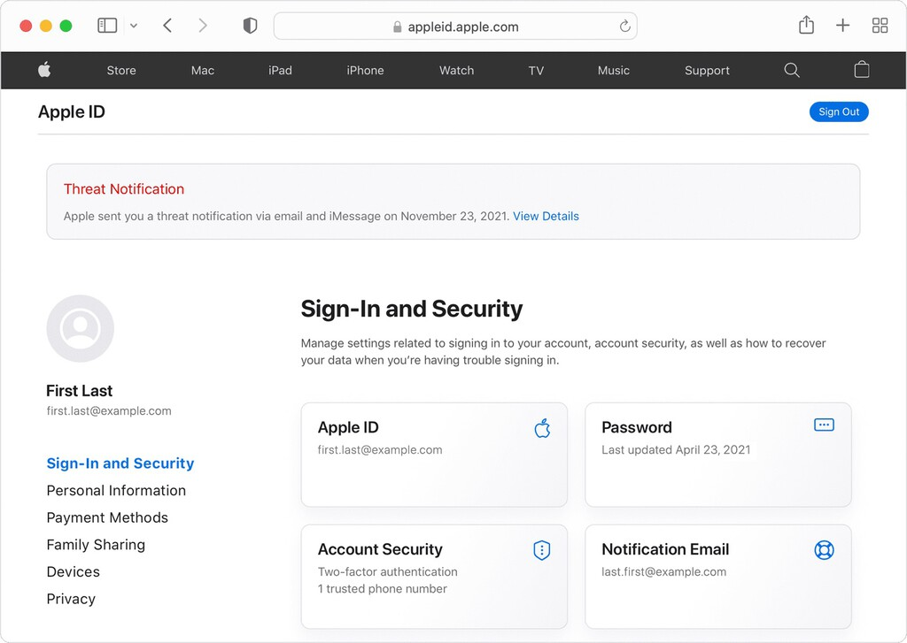

Apple alerta sobre un "software espía mercenario": hay más de 150 países bajo riesgo
El malware afecta a perfiles muy específicos, pero Apple alerta ante posibles ataques de espionaje
Comprar dispositivos de Apple es apostar por ciertas garantías en lo relativo a nuestra seguridad. Pese a ello, no hay software infalible. Apple ha vuelto a enviar notificaciones para alertar a los usuarios sobre los posibles peligros del software espía. La lista comprende, según Apple, más de 150 países en la que determinados usuarios han recibido alertas. Malware como el desarrollado por el grupo NSO, Pegasus, es el principal responsable.
150 países en alertaApple notificó este pasado miércoles a usuarios de 92 países mediante iMessage. Aunque no se desvelan los países en los que se recibieron los mensajes, la propia página de soporte apunta a que tras este aviso ya son más de 150 los países en los que los usuarios han recibido alertas.
Es algo que se refleja en la propia página de soporte de Apple, y en la que la compañía afirma que "detecta actividad consistente con un ataque de software espía mercenario, notificamos a los usuarios". En otras palabras, tan solo son notificados aquellos usuarios que, más que probablemente, estén bajo ataque.
Las dos formas de notificar. Apple tiene dos métodos para informar a los usuarios sobre estos posibles ataques. La primera de ellas es mediante una notificación en la página de Apple ID. Bajo el nombre de "notificación de amenaza", esta página nos avisa de que hemos recibido dos mensajes.
Estos dos mensajes se reparten entre la app de Mail de Apple y iMessage. A ambas alternativas nos llegará un correo en el que se explican los posibles riesgos del ataque y las recomendaciones a seguir.
De qué nos advierte Apple. Apple tan solo envía estas notificaciones cuando estamos bajo ataque de malware como el de Pegasus, centrado en perfiles destacados en ciertos estados, como periodistas, políticos, funcionarios del estado y demás.
Advierten que nuestro teléfono podría estar bajo un ataque que lograse el control remoto del dispositivo, acceso al micrófono, cámara, aplicaciones y cuentas personales.
Qué soluciones propone Apple. En el correo, Apple nos invita a mantener nuestro iPhone actualizado siempre a la última versión, ya que esta viene de la mano de los últimos parches de seguridad.
También recomienda activar el modo de aislamiento, una medida de protección "opcional y extrema que solo debe usarse en el caso de sospechar que eres objetivo de un ciberataque muy sofisticado".
Cuando usamos este modo, se limitan "de forma estricta" determinadas aplicaciones, webs y funciones del dispositivo. Entre ellas, la app de mensajes bloquea vistas previas y enlaces, la navegación web que restringida, FaceTime bloquea llamadas entrantes si el usuario no ha llamado previamente a la persona, etc.
Aunque la alerta se haya enviado a perfiles de tantos países, es bastante improbable que los usuarios habituales hayan recibido un aviso de este calado.
Imagen | Xataka
En Xataka | Así es Pegasus, el software espía que ha infectado los móviles de Pedro Sánchez y Margarita Robles